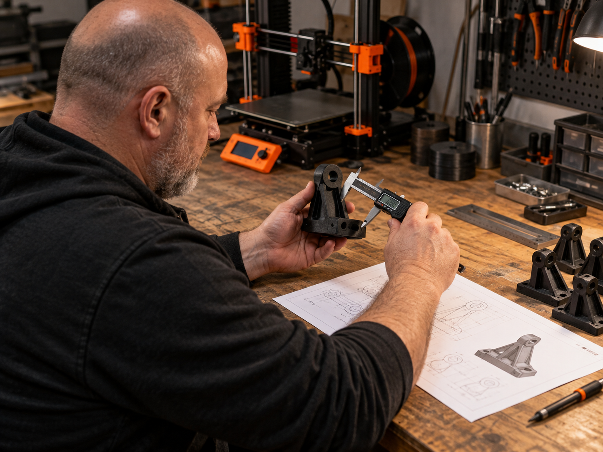

01
שירותי הנדסה ותכנון
הפיכת דרישות לתכנון שניתן לייצר, או התאמת מודל קיים להמשך הפרויקט.
אפשר להתחיל מרעיון, משרטוט, מחלק קיים או ממודל שדורש שינוי. נגדיר יחד מה החלק צריך לעשות ובאילו תנאים הוא יעבוד, ונבנה תכנון שמתאים לתהליך הייצור.
- הגדרת דרישות ותנאי עבודה
- תכנון ומידול לייצור
- התאמת מודל קיים לתהליך הנבחר